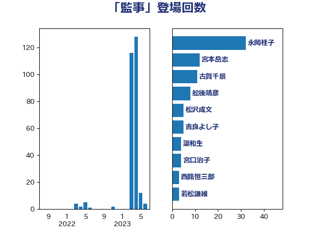

単語「監事」

| 永岡桂子 | 自由民主党 | 32 回 |
| 宮本岳志 | 日本共産党 | 12 回 |
| 古賀千景 | 立憲民主党 | 11 回 |
| 舩後靖彦 | れいわ新選組 | 8 回 |
| 松沢成文 | 日本維新の会 | 5 回 |
| 吉良よし子 | 日本共産党 | 5 回 |
| 簗和生 | 自由民主党 | 4 回 |
| 宮口治子 | 立憲民主党 | 4 回 |
| 西銘恒三郎 | 自由民主党 | 3 回 |
| 若松謙維 | 公明党 | 3 回 |
| 細田博之 | 自由民主党 | 3 回 |
| 加藤勝信 | 自由民主党 | 3 回 |
| 金村龍那 | 日本維新の会 | 2 回 |
| 西岡秀子 | 国民民主党 | 2 回 |
| 福島伸享 | 無所属 | 2 回 |
| 石井準一 | 自由民主党 | 2 回 |
| 熊谷裕人 | 立憲民主党 | 2 回 |
| 梅谷守 | 立憲民主党 | 2 回 |
| 柚木道義 | 立憲民主党 | 2 回 |
| 山口俊一 | 自由民主党 | 2 回 |
| 尾辻秀久 | 無所属 | 2 回 |
| 小山展弘 | 立憲民主党 | 2 回 |
| 吉川元 | 立憲民主党 | 2 回 |
| 三上えり | 立憲民主党 | 2 回 |
| 高橋克法 | 自由民主党 | 1 回 |
| 青山周平 | 自由民主党 | 1 回 |
| 鈴木俊一 | 自由民主党 | 1 回 |
| 野間健 | 立憲民主党 | 1 回 |
| 遠藤良太 | 日本維新の会 | 1 回 |
| 藤丸敏 | 自由民主党 | 1 回 |
| 臼井正一 | 自由民主党 | 1 回 |
| 米山隆一 | 立憲民主党 | 1 回 |
| 渡辺博道 | 自由民主党 | 1 回 |
| 橋本岳 | 自由民主党 | 1 回 |
| 森山浩行 | 立憲民主党 | 1 回 |
| 早坂敦 | 日本維新の会 | 1 回 |
| 住吉寛紀 | 日本維新の会 | 1 回 |
| 伊藤孝恵 | 国民民主党 | 1 回 |